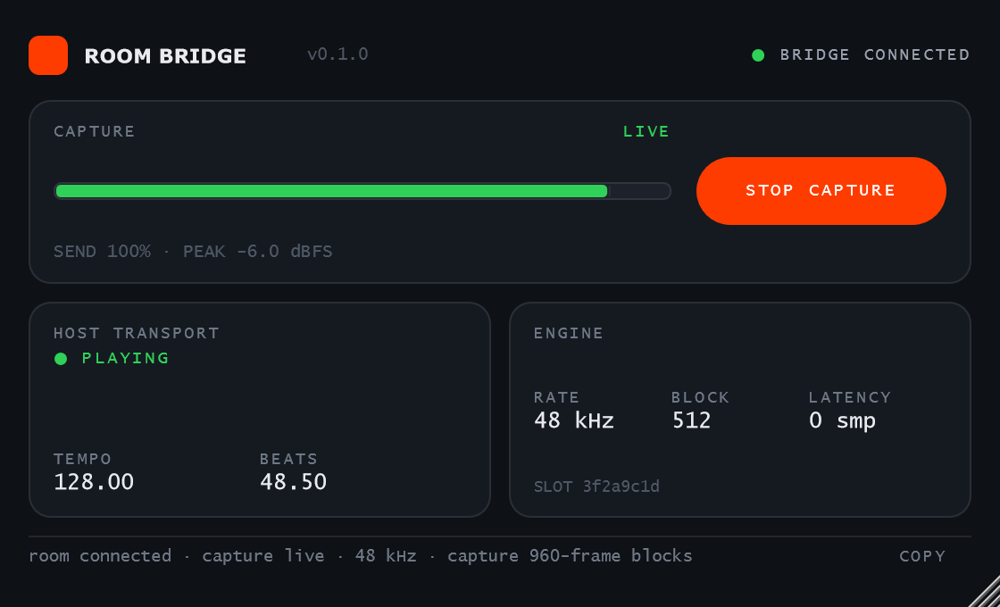

VST3 for Ableton Live and FL Studio
Your DAW.
The room.
Send your session audio into Studio.

Downloads
Already invited?
Open your host’s guest link in a browser. For public rooms, select Listen in Studio.
DAW routing
Use Room Bridge VST3 and the companion app on a dedicated send bus. Native Return is for supported local ws:// rooms. Put it on a separate monitor track outside the send bus.